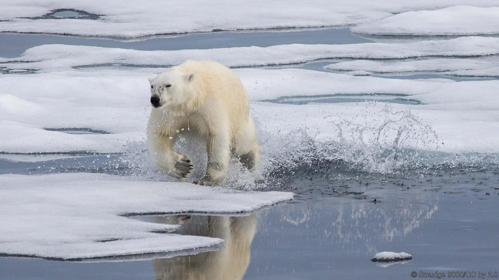
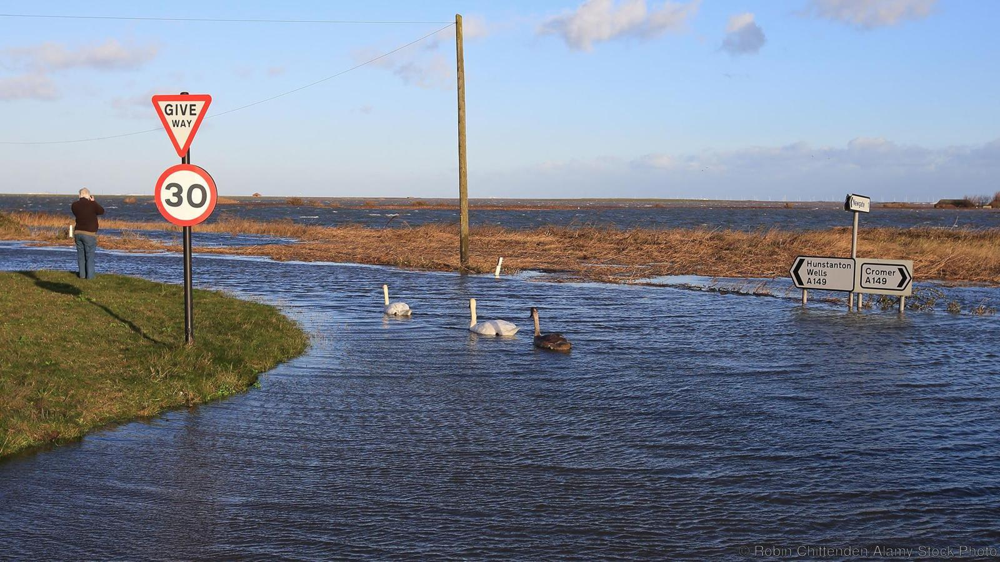
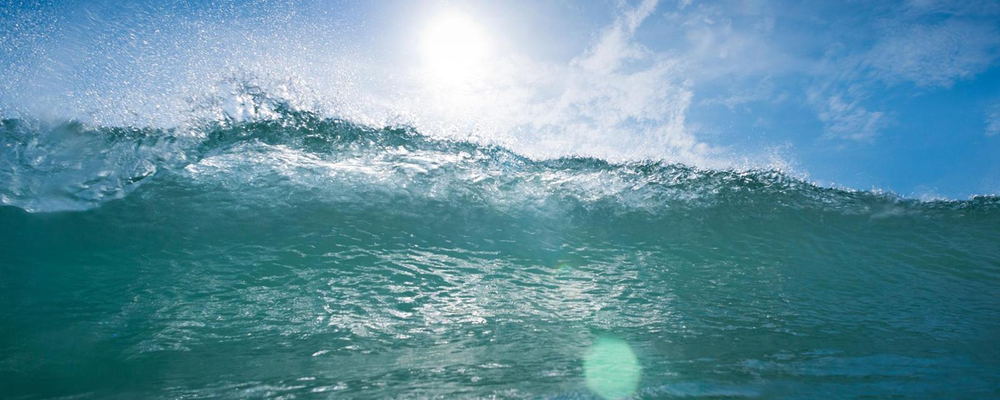
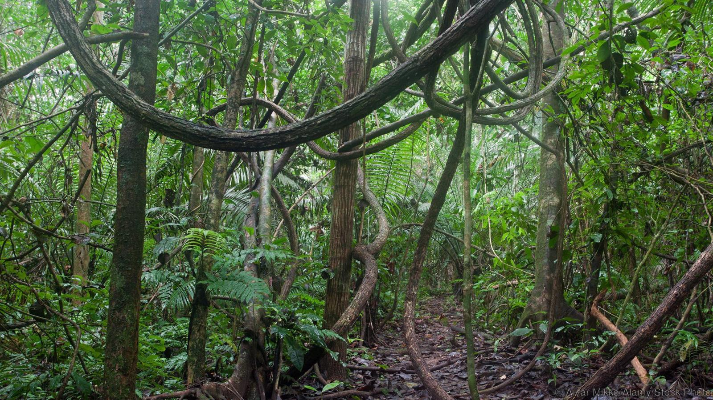

首页
新闻
数据
更多介绍
污染动态
详细信息
污染物种类
详细信息
污染指数报道
详细信息
新闻还是被忽略的事实？
News
Or
Truth
现在地球各个角落无时无刻发生着
自然灾害，污气泄露，水资源的污染，温室气体排放。
全球变暖是地球的问题还是人类的影响？
气候变化新闻
更多>>
南极冰川已达到历史最低
据报道，上周二的卫星观测数据表面，自1979年有记录以来，南极的冰川面积已经达到历史最低值
Via CNN More>>

我们的地球会变得多热..
在经历过最热的一个暑期后，现在有了一个问题，它会变得多热？
Via BBC More>>
巴黎举行游行对抗气候..
近日，一群环境保护组织成员在巴黎举行一场减速全球变暖进程的游行
Via CNN More>>

气候变换对人类的影响
印度自1972年以来的干旱影响着Vyjanta Ithape一家，有摄影师拍摄了他们的日常..
Via CNN Photos>>
其他相关
更多>>

海平面会上升到多高?
如果气候变暖持续加剧，我们在这个世纪内将可能会看到更严重的后果...
Via BBC Earth More>>
特朗普并不能代表美..
在普通民众和科学界间一直存在对全球气候不同的看法，近年来，越来越多的证据和现象表面，气候变暖是真的！
Via CNN More>>

地球最多可以容纳多..
你可能会经常听说人口负载是地球的一个大问题，不过现在有一项研究表明，地球的人口数可以..
Via BBC More>>
极端天气频繁出现是否..
d地球现在已经变得越来越像火星了，如果仔细的看，你可以发现越来越多的干涸的河流和消失的冰川
Via BBC More>>
相关链接
BBC相关新闻
Global Change.gov
联合国环境规划署
了解更多
网站介绍
更多
联系方式
E-mail:
erneststarman@outlook.com
Tel: 86-159xxxxxxxx
本网站部分图片文字来源为互联网
爱护环境，共同努力 :)
Join Team Earth
CopyRight @ 2017 张炜-CCNU